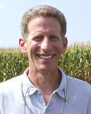
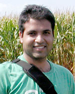
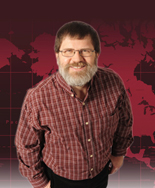
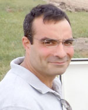
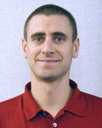

Objective 3 - Scientists & Staff
Obj. 3 - Apply climate and physical models to synthesize results from the field tests and extend them to predict climate and economic scenarios. These include DAYCENT for coupling crop and climate models (Del Grosso et al. 2005), the Soil Landscape Interface Model (SoLIM; for extending the results to the on-farm scale, and SWAT (Arnold et al. 1998; Gassman et al. 2007) to extend these models to the watershed level and incorporate economic land-use models with physical and climate models.
Jump to:
Anex
|  | Robert P. Anex, Jr. (Rob) Principal Investigator; Obj. 3 (lead); Obj. 4 University of Wisconsin Faculty Web site Professor - Agr and Biosystems Engineering |
||
| Not Pictured: |
PhD Graduate Student (LCA) |
PhD Graduate Student (LCA) |
|
|
PhD Graduate Student (LCA) |
 |
Research Staff Post Doctoral Researcher |
|
Arritt
|  | Raymond W. Arritt |
Daryl Herzmann |
Basso
| Not Pictured: | Bruno Basso |
| Principal Investigator; Obj. 3 | |
| Michigan State University | |
| Faculty Web site | |
| Associate Professor - Crop Systems, Forestry, Env Sci |
Bowling
| Not Pictured: | Laura Bowling |
| Principal Investigator; Obj. 1 & 2; Obj. 3 | |
| Purdue University | |
| Faculty Web site | |
| Associate Professor - Agronomy |
Castellano
|  | Michael Castellano (Mike) Principal Investigator; Obj. 1 & 2; Obj. 3 Iowa State University Faculty Web site Assistant Professor - Agronomy |
||
Kling
| Catherine L. Kling (Cathy) | |
| Principal Investigator; Obj. 3 | |
| Iowa State University | |
| Faculty Web site | |
| Professor - Center for Agr & Rural Dev / Economics |
| Not Pictured: | Philip W. Gassman (Phil) |
| Principal Investigator; Obj. 3 | |
| Iowa State University | |
| Associate Scientist - Center for Agr & Rural Dev (CARD) |
|
Miguez
|  | Fernando E. Miguez |
| Principal Investigator; Obj. 3 | |
| Iowa State University | |
| Faculty Web site | |
| Assistant Professor - Agronomy |
|
O'Neal
| Not Pictured: | Matthew O'Neal (Matt) |
| Principal Investigator; Obj. 1 & 2; Obj. 3, IPM | |
| Iowa State University | |
| Faculty Web site | |
| Associate Professor - Entomology |
Owens
| Not Pictured | Phillip Owens |
| Principal Investigator; Obj. 1 & 2; Obj. 3 | |
| Purdue University | |
| Faculty Web site | |
| Associate Professor - Agronomy |
|
SUSTAINABLECORN.ORG | Website Administrator
USDA-NIFA Award No.: 2011-68002-30190